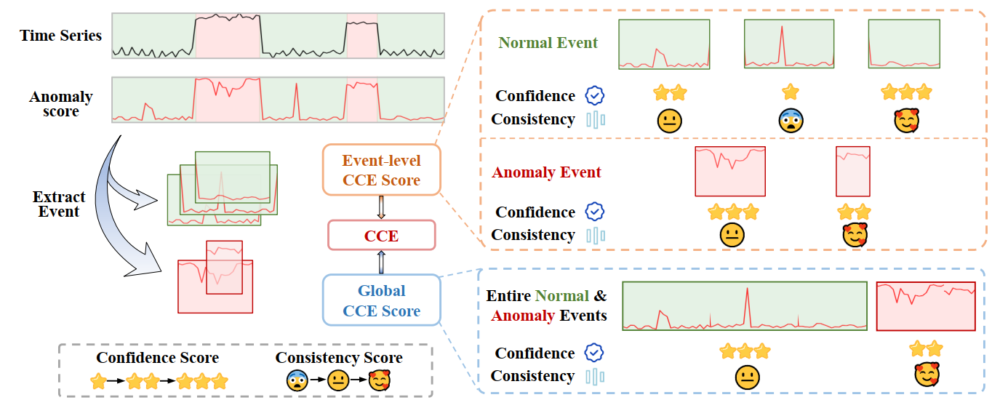

Time Series Anomaly Detection metrics serve as crucial tools for model evaluation. However, existing metrics suffer from several limitations: insufficient discriminative power, strong hyperparameter dependency, sensitivity to perturbations, and high computational overhead. This paper introduces Confidence-Consistency Evaluation (CCE), a novel evaluation metric that simultaneously measures prediction confidence and uncertainty consistency. By employing Bayesian estimation to quantify the uncertainty of anomaly scores, we construct both global and event-level confidence and consistency scores for model predictions, resulting in a concise CCE metric. Theoretically and experimentally, we demonstrate that CCE possesses strict boundedness, Lipschitz robustness against score perturbations, and linear time complexity $\mathcal{O}(n)$. Furthermore, we establish RankEval, a benchmark for comparing the ranking capabilities of various metrics. RankEval represents the first standardized and reproducible evaluation pipeline that enables objective comparison of evaluation metrics. Both CCE and RankEval implementations are fully open-source

| Task | Score | CCE | AUC-ROC | F1 | F1-PA | Reduced-F1 | R-based F1 | eTaPR | Aff-F1 | UAff-F1 | VUS-ROC |
|---|---|---|---|---|---|---|---|---|---|---|---|
| AccQ | Sp | 1.000 | 1.000 | 0.340 | 0.340 | 0.340 | 0.294 | 0.780 | 0.832 | 0.825 | 1.000 |
| Kd | 1.000 | 1.000 | 0.248 | 0.248 | 0.248 | 0.193 | 0.697 | 0.789 | 0.779 | 1.000 | |
| MD | 0.000 | 0.000 | 2.094 | 2.094 | 2.095 | 2.344 | 1.147 | 0.587 | 0.622 | 0.000 | |
| LowDisAccQ | Sp | 1.000 | 1.000 | 0.998 | 0.998 | 0.996 | 0.901 | 0.846 | 0.953 | 0.944 | 1.000 |
| Kd | 1.000 | 1.000 | 0.993 | 0.993 | 0.990 | 0.895 | 0.760 | 0.927 | 0.915 | 1.000 | |
| MD | 0.000 | 0.000 | 0.025 | 0.025 | 0.038 | 0.465 | 0.933 | 0.265 | 0.299 | 0.000 | |
| PreQ-NegP-Q | Sp | 1.000 | 1.000 | 0.928 | 0.925 | 0.895 | 0.681 | 0.878 | 0.883 | 0.872 | 1.000 |
| Kd | 1.000 | 0.999 | 0.931 | 0.925 | 0.892 | 0.674 | 0.866 | 0.855 | 0.839 | 1.000 | |
| MD | 0.000 | 0.003 | 0.267 | 0.287 | 0.371 | 1.131 | 0.494 | 0.551 | 0.619 | 0.002 | |
| PreQ-NegP-P | Sp | 1.000 | 0.987 | 1.000 | 1.000 | 1.000 | 0.789 | 0.876 | 0.920 | 0.891 | 0.990 |
| Kd | 1.000 | 0.982 | 1.000 | 1.000 | 1.000 | 0.776 | 0.864 | 0.895 | 0.863 | 0.986 | |
| MD | 0.000 | 0.026 | 0.000 | 0.000 | 0.000 | 0.267 | 0.160 | 0.150 | 0.192 | 0.019 | |
| Avg. | Sp | 1.000 | 0.997 | 0.816 | 0.816 | 0.808 | 0.666 | 0.845 | 0.897 | 0.883 | 0.998 |
| Kd | 1.000 | 0.995 | 0.793 | 0.792 | 0.783 | 0.635 | 0.797 | 0.866 | 0.849 | 0.996 | |
| MD | 0.000 | 0.007 | 0.597 | 0.601 | 0.626 | 1.052 | 0.684 | 0.388 | 0.433 | 0.005 |
TODO